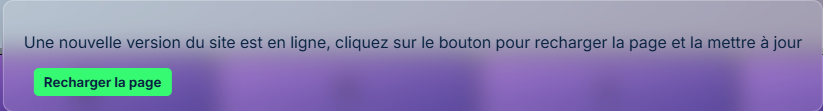
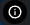
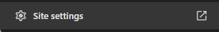
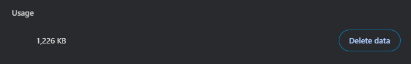

Comment télécharger la dernière version de MoodShare ?
Q: J'ai la bannière "La version de Moodshare n'est pas à jour", que faire ?
Ne vous inquétez pas, pour régler ce soucis, vous avez deux solutions possibles:
Solution 1 : Recharger la page grâce au bouton dedié
Quand votre version de Moodshare n'est pas la même que celle définie, vous verrez une bannière apparaitre en bas, cliquez sur le bouton "Rechargez la page", si cela ne change rien et que vous avez toujours la bannière, procédez à l'étape suivante. La bannière est précente ci-dessous
Bannière de rechargement Moodshare
Solution 2: Vider manuellement le cache du site et le relancer
Si la solution 1 n'a pas fonctionné, vous pouvez vider le cache du site MoodShare dans les paramètres de votre navigateur. Voici comment faire pour les navigateurs les plus populaires:
- Navigateurs basés sur Chrome Allez dans les paramètres de la
page et cliquez sur le boutton
"Effacer les données"
1) Cliquez sur :
2) Cliquez sur 
3) Enfin cliquez sur ce bouton: 
4) Rechargez la page et voilà !
Navigateurs basés sur Chrome:
- Adventurer
- Amazon Silk
- Arc
- Aspen (Avast)
- Avast
- Avira Scout
- Brave
- Cent Browser
- Chromodo
- Coc coc
- Comet
- Comodo Dragon
- Duck Duck Go
- Ecosia
- Epic
- Falkon
- Iridium Browser
- Iron
- Kiwi Browser
- Konqueror
- Lilo Browser
- Maxthon
- Microsoft Edge (V80.0.361.111 et antérieures)
- Naver Whale
- Opera (v15 et antérieures)
- Otter
- Puffin
- QuteBrowser
- RockMelt
- Samsung Internet
- Sleipnir
- SRWare Iron
- Supermium
- UC Browser
- ungoogled-chromium
- UR
- Vivaldi
- Yandex Browser